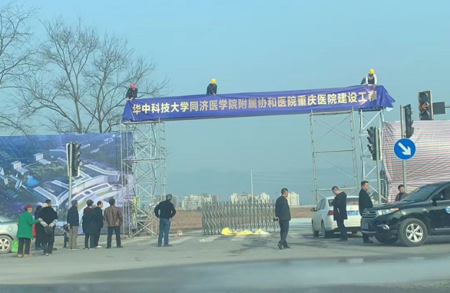
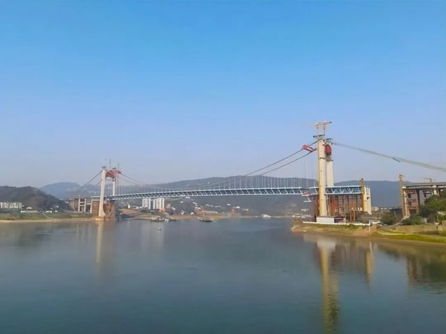
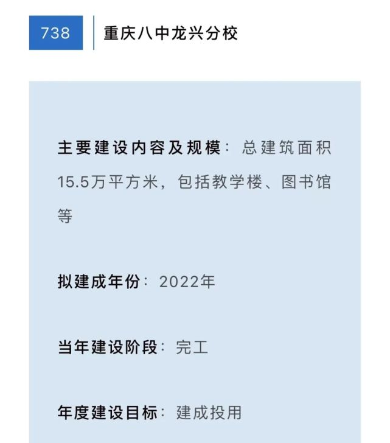
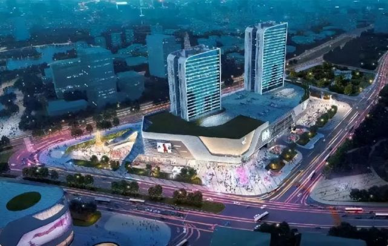
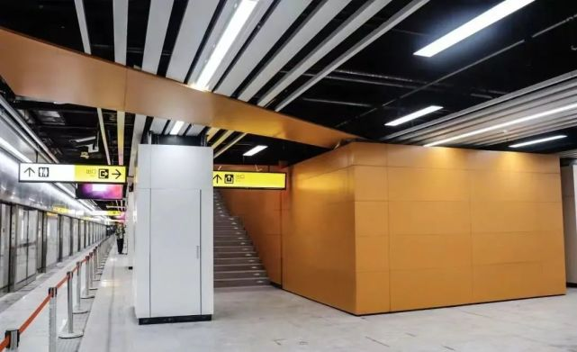
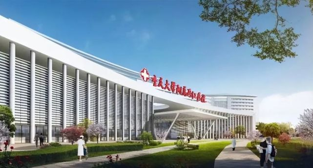
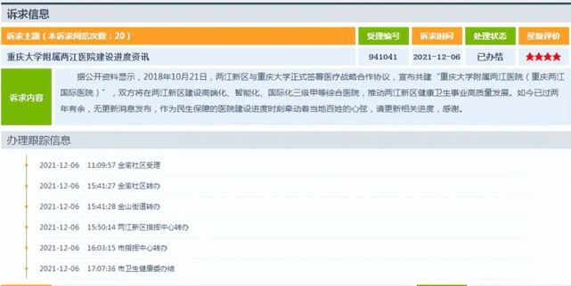

近日，重庆市公共资源交易网发布《关于【华中科技大学同济医院附属协和医院重庆医院土壤污染调查】中选结果的公告》（以下简称《公告》），片区居民关心的医院终于又迎来新进展。 |
 |
《公告》（图源官网截图）
重庆两江国际医院取消建设
龙兴片区医院建设一波三折
《公告》标题显示，龙兴片区的医院为“华中科技大学同济医院附属协和医院重庆医院”（医院具体名称以最后挂牌为准）。也就是说，龙兴片区居民久等的三甲医院基本确定，将挂牌华中科技大学同济医院附属协和医院。 |
|  |
重庆大学附属两江医院效果图（图源网络）
龙兴的医院建设可谓是一波三折，2018年10月，官宣重庆大学附属两江医院将进入龙兴片区，此后3年间有关该院的建设进展却几乎为零。
2021年12月，市民通过问政平台问询重庆大学附属两江医院（重庆两江国际医院）最新进展，对此两江新区社会发展局回复：因管理体制政策变动，战略合作终止，但近期分别对接了3家市级公立综合三甲医院。 |
|
问询（图源平台截图）
当时两江新区社会发展局强调，除了与3家市级公立综合三甲医院有过对接，还去往北京、上海和武汉等地区，进行医院相关的引进工作，有医院具有初步意向入驻龙兴片区。
今年2月，亚洲杯体育场旁边立起一块施工通知牌，告知市民将于2月28日起对亚洲杯主体育场医院板块地块进行施工。不过，当时并未告知市民该医院建设的具体消息。 |
|  |
施工通知（图源网络）
随后不久，场地开始围挡为进场施工做准备。从市民发布的照片来看，工人正在悬挂名为“华中科技大学同济医院附属协和医院重庆医院建设工程”的横幅。
《公告》发布，医院终于有动工的迹象
然而，“取消异地办医院”的消息传出，让龙兴片区这所医院又变为了未知。此次《公告》的发布，也算是给片区居民吃下一颗定心丸。尽管还未官宣医院正式名称，但从目前的进展来看，医院终于有动工的迹象。 |
|  |
围挡（图源网络）
从规划位置来看，该院位于两江大道上，与正在建设的亚洲杯体育场——龙兴足球场为邻，同时还靠近即将开通的轨道交通4号线二期高石塔站，地理位置便利。
随着龙兴片区常住人口的增多，只有加快大型综合医院的建设，才能满足片区内居民的医疗服务需求。这次医院的落地对龙兴甚至整个两江新区都有带动作用，极大缓解片区内看病难的问题。 |
|
(图源网络）
医院、交通、教育、商业等建设
龙兴将迎来区域建设的爆发式发展
龙兴片区的医院终于迎来重大进展，该片区今年在交通、教育、商业上也值得期待。
交通上，4号线二期即将通车，郭家沱大桥合龙年内可达通车条件。 |
|  |
郭家沱大桥合龙（图源重庆住建）
3月中旬，郭家沱大桥成功合龙，这意味着大桥离通车更进一步。按照计划，大桥今年将具备通车条件，通车后，两江新区到南岸茶园片区的车程将由目前的40分钟缩短至10分钟。
轨道4号线二期全线车站装修也将于本月底完工，早在3月，该线路就已开始进行不载客运行，预计上半年具备开通运营条件。 |
|  |
4号线二期车站装修（图源重庆两江新区）
4号线二期全程32.8公里，设有15座车站，其中龙兴片区设有龙兴站、高石塔站等站点，而高石塔站正是位于此次医院的附近。
教育上，重庆八中龙兴分校预计今年建成投用。
上个月，重庆市人民政府发布《重庆市人民政府办公厅关于做好2022年市级重大项目实施有关工作的通知》（以下简称《通知》），《通知》显示，两江新区多个重大项目上榜。 |
|  |
重庆八中龙兴分校项目
其中，重庆八中龙兴分校项目预计今年建成投用。项目于去年开始修建，投资约13亿，规划初中90个班、高中30个班，在校学生6000人。
商业上，龙兴天街预计今年底正式营业。
龙兴天街作为龙盛新城内首个购物中心，自2020年8月正式开工后，去年11月顺利封顶，目前正在招商阶段，预计今年年底开业。 |
 |
该商业开业后，在方便龙兴片区居民生活的同时，还将对龙兴片区的人流量和热度起到促进作用。
此外，备受关注的龙兴足球场也正在有序建设中，作为明年亚洲杯的举办场地之一，足球场目前已进入金属屋面及幕墙装饰装修施工收尾阶段，今
医院、交通、教育、商业，以及龙兴体育场的建设，今年龙兴片区将迎来区域建设的爆发式发展，随着各大配套的陆续落地，龙兴区域的发展也将走向新的阶段 |